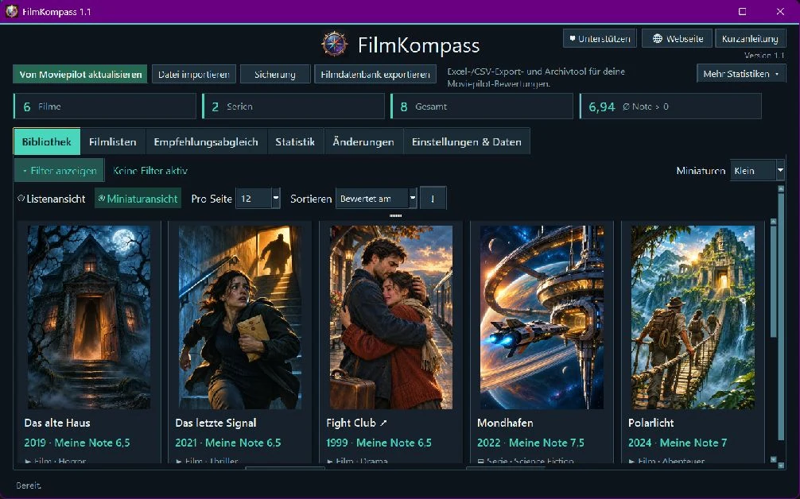
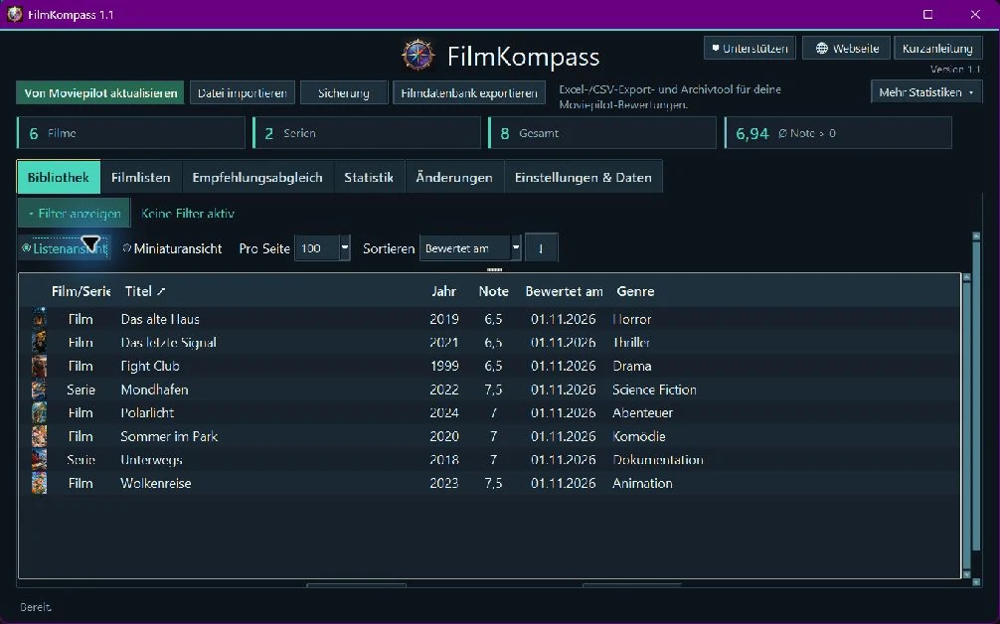
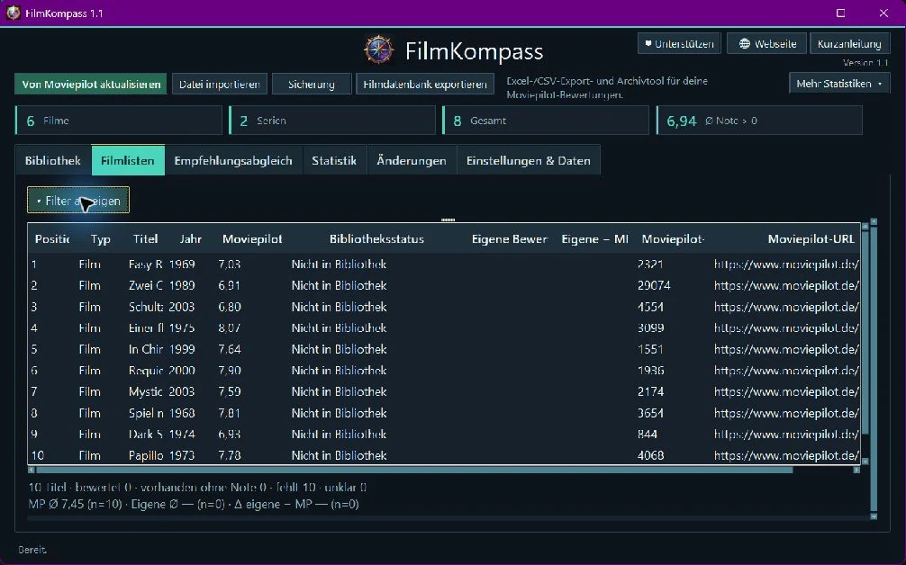
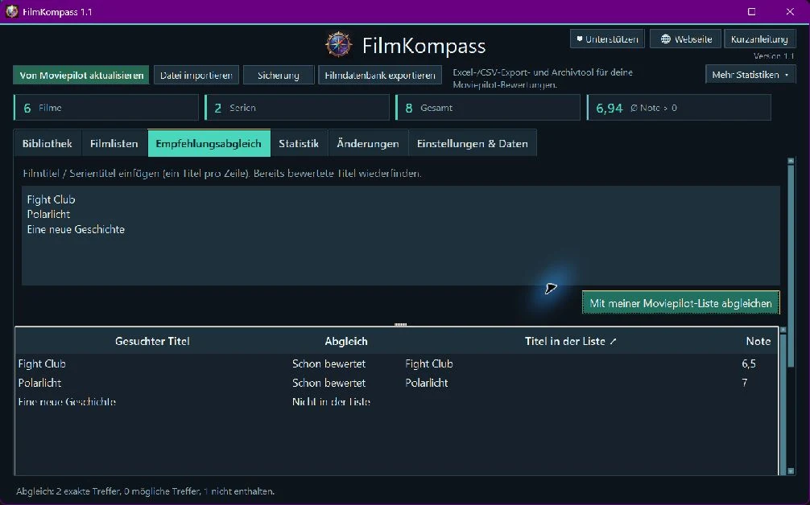
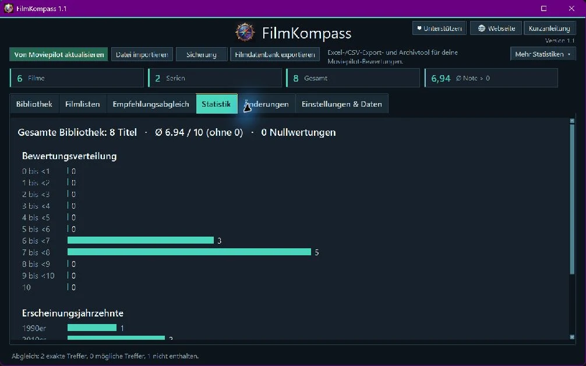
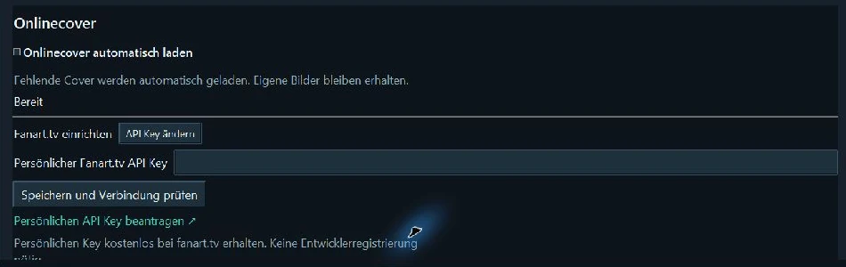

Moviepilot-Bewertungen
Öffentliche Film- und Serienbewertungen mit vorhandenem Bewertungsdatum übernehmen und erneut aktualisieren. Deine persönliche Bewertungsbibliothek bleibt lokal.
DEINE SAMMLUNG. LOKAL BEI DIR.
Dein kostenloser Filmmanager für Windows.
Bewertungen herunterladen, Filme und Serien lokal verwalten und deine Sammlung durchsuchen.
Version 1.1 ergänzt gespeicherte Moviepilot-Filmlisten, Bibliotheksvergleiche und automatische Cover. Deine Bewertungen und Ergebnisse bleiben lokal und lassen sich als Excel oder CSV exportieren.
Kostenlos · Open Source
Windows 10/11 (64-Bit) · Portables ZIP · ca. 25,7 MB · Kein Python erforderlich
Windows 10/11: Hauptfunktionen vom Nutzer getestet; zusätzliche native Windows-11-Prüfung des vorherigen Kandidaten. Systemdetails

WENIGER SUCHEN. MEHR ENTDECKEN.
Öffentliche Film- und Serienbewertungen mit vorhandenem Bewertungsdatum übernehmen und erneut aktualisieren. Deine persönliche Bewertungsbibliothek bleibt lokal.
Unterstützte öffentliche Moviepilot-Listen zusätzlich herunterladen, lokal auswählen, aktualisieren, entfernen und als Excel/CSV exportieren.
Zu Listentiteln vorhandene eigene Bewertungen und Überschneidungen erkennen. Moviepilot-Communitywerte bleiben getrennt. Der Empfehlungsabgleich prüft eingefügte Titel gegen deine Bibliothek.
Listenansicht oder Karten in Klein, Mittel und Groß. Seitengröße, Suche und Sortierung bleiben verfügbar; gültige Moviepilot-Quellen lassen sich direkt öffnen.
Fanart.tv einmalig lokal einrichten, fehlende Cover automatisch laden, pausieren und fortsetzen. Eigene Bilder haben Vorrang; der lokale Cache funktioniert auch offline.
Nach Genre, Erscheinungsjahr, eigener Note, Bewertungsjahr und -monat filtern. Statistik zeigt Bewertungsverteilungen und persönliche Übersichten.
Vorhandene XLSX-/CSV-Daten importieren. Ganze Bibliothek oder gefilterte Ergebnisse exportieren. Datenbanksicherung und kontrollierter Reset mit geprüfter Sicherung.
ZIP vollständig entpacken, EXE starten – ohne separate Python-Installation. Kurzanleitung und freiwillige tägliche Versionsprüfung sind eingebaut.
Filmlisten sind getrennt von deiner persönlichen Bewertungsbibliothek. Verglichen wird jeweils mit deiner Bibliothek, nicht automatisch jede Liste mit jeder anderen. Nicht alle öffentlichen Listen sind abrufbar: Bei HTTP 403 respektiert FilmKompass die Zugriffsbeschränkung. Einzelne Katalogabrufe sind auf 200 Titel begrenzt. Es werden keine Filme oder Videos heruntergeladen.
EIN BLICK INS PROGRAMM
Aktuelle Aufnahmen der finalen Version 1.1 mit synthetischen Testdaten. Zum Vergrößern anklicken.





DEINE BEWERTUNGEN, NUR EIN PAAR KLICKS ENTFERNT
FilmKompass 1.1 kostenlos für Windows herunterladen.
ZIP samt _internal in einen beschreibbaren Ordner entpacken.
FilmKompass.exe öffnen. Kein Python und keine Administratorrechte nötig.
Öffentlichen Moviepilot-Profilnamen eingeben oder vorhandene CSV/XLSX importieren.
Suchen, filtern, sortieren und zwischen Liste und Miniaturen wechseln.
Unter Filmlisten eine unterstützte öffentliche URL mit „Liste importieren“ laden und mit deiner Bibliothek vergleichen.
Persönlichen API Key lokal einrichten und Verbindung prüfen. Coverautomatik anschließend bewusst aktivieren. Ohne Onlinecover ist kein Schlüssel nötig.
Excel/CSV für Bewertungen; Datenbanksicherung und zusätzliche Bilddateien für einen Gerätewechsel behalten.
Keine separate Python-Installation nötig. Der zugehörige _internal-Ordner muss erhalten bleiben. Die EXE ist derzeit nicht digital signiert; Windows kann deshalb warnen. Nutze die offizielle Bezugsquelle und prüfe die Prüfsummen. Windows-Sicherheitsfunktionen bleiben eingeschaltet.
Anleitung: Moviepilot-Bewertungen herunterladen und nach Excel exportieren →
Entpacke die ZIP-Datei vollständig und starte FilmKompass.exe im entpackten Programmordner. Der vollständige _internal-Ordner muss neben der EXE bleiben. Python brauchst du nicht separat zu installieren. Die EXE ist unsigniert; nutze die offizielle Bezugsquelle und lasse die Windows-Sicherheitsfunktionen eingeschaltet. Notiere bei einem Fehler die genaue Meldung und deine Windows-Version. Ausführliche Starthilfe
FilmKompass 1.1 · Veröffentlichung: 08.11.2026 · Release und Versionsinformationen
MIT DEINER EXPORTDATEI WEITERARBEITEN
Exportiere deine Moviepilot-Bewertungen als Excel- oder CSV-Datei. Wenn du möchtest, kannst du sie selbst bei ChatGPT, Gemini oder einem anderen geeigneten KI-Dienst bereitstellen: für eine Auswertung deines Filmgeschmacks, Statistiken oder Vorschläge für noch nicht bewertete Filme.
Die Weitergabe ist freiwillig. FilmKompass überträgt keine Daten an KI-Dienste und führt keine automatische KI-Analyse aus. Beim Bereitstellen deiner Datei verarbeitet der externe Anbieter persönliche Bewertungsdaten.
Zur KI-Anleitung mit vier kopierbaren Prompts und fiktiven Beispieldateien →DEINE SAMMLUNG GEHÖRT DIR
FilmKompass speichert deine Bibliothek lokal auf deinem Computer. Es gibt keine automatische Cloud-Synchronisation und keine automatische Weitergabe deiner Filmdaten an KI-Dienste.
Du entscheidest selbst, welche Informationen du exportierst oder weitergibst.
Für den Moviepilot-Download müssen die Bewertungen öffentlich sichtbar sein. Danach kannst du sie wieder privat stellen. Während der Freigabe können auch andere sie sehen.
Datenschutz und Datensicherung ↗GUT ZU WISSEN
Ja, kostenlos und unter MIT-Lizenz quelloffen. Unterstützung ist freiwillig.
Für Windows 10/11 mit 64 Bit vorgesehen. Hauptfunktionen unter Windows 10/11 und das korrigierte Taskleistensymbol wurden vom Nutzer bestätigt. Der vorherige Kandidat wurde nativ unter Windows 11 geprüft. Der finale Korrekturbuild startet; seine erneute visuelle Erfassung war technisch nicht möglich. Kein erneuter Windows-10-Test des finalen Pakets.
Die portable ZIP enthält die Laufzeit. Kein separat installiertes Python nötig.
Für eigene Profilbewertungen brauchst du ein Profil. Öffentlich zugängliche Listen benötigen keine eigene Anmeldung.
Für den Profildownload ja. Während der Freigabe können auch andere sie sehen. Lokale Dateiimporte bleiben möglich.
Unterstützte Listen und begrenzte Kataloge. Nicht jede URL ist abrufbar; HTTP 403 wird respektiert. Persönliche Bibliothek und zusätzliche Listen bleiben getrennt.
Er vergleicht eingefügte Titel mit deiner eigenen Bibliothek. Gespeicherte Listen zeigen ebenfalls deren Bibliotheksstatus und vorhandene eigene Bewertungen. Ein freier Listen-gegen-Listen-Vergleich ist nicht enthalten.
Standardmäßig unter %LOCALAPPDATA%/MoviepilotManager. Einstellungen & Daten zeigt den tatsächlichen Pfad. Kein automatischer Cloudabgleich.
Über fanart.tv; gesucht wird bei Bedarf mit Wikidata-IDs. Cover werden nicht mitgeliefert. Eigene Bilder und 15 Genreillustrationen funktionieren ohne Coverabruf.
Für Onlinecover genügt ein persönlicher Fanart.tv API Key. Ein Project Key und eine Entwicklerregistrierung sind für normale Nutzer nicht erforderlich. Fehlende IDs, Poster oder Internet können einen Treffer verhindern.
Bibliothek, Filter, gespeicherte Listenvergleiche und gecachte Bilder ja. Neue Downloads, Cover, Versionsprüfung und Browserziele benötigen Internet.
Nein. FilmKompass verarbeitet Titel, Bewertungen, Listen und optional Coverbilder.
SQLite-Sicherungen enthalten Daten und Bildzuordnungen, nicht automatisch alle Bilddateien. Für den Gerätewechsel Appdaten samt Bildern zusätzlich sichern. Vollständiges Profillöschen erstellt in Version 1.1 vorher eine geprüfte externe Sicherung unter Dokumente/FilmKompass/Sicherungen. Archive können private Schlüssel enthalten.
Unter Programmupdates manuell prüfen oder die standardmäßig ausgeschaltete tägliche Prüfung aktivieren. Keine automatische Installation. Die Versionsdatei auf der offiziellen Webseite meldet den veröffentlichten Stand. Bei Netzwerkfehlern erscheint keine falsche Aktualitätsbestätigung.
DEIN NÄCHSTER FILMABEND BEGINNT MIT ÜBERBLICK
Aktuell verfügbar: FilmKompass 1.1. Vorherige Versionen bleiben in der GitHub-Releasehistorie erhalten. ZIP vollständig entpacken und _internal behalten. Die EXE ist unsigniert. Windows 10/11 x64; kein separat installiertes Python.
↓ FilmKompass 1.1 kostenlos herunterladenFilmKompass ist kostenlos und wird unabhängig entwickelt.
Wenn dir das Programm gefällt und du die Weiterentwicklung freiwillig unterstützen möchtest, freue ich mich über eine kleine Unterstützung.
Vielen Dank! ❤️
Die Unterstützung ist vollkommen freiwillig. Alle Funktionen bleiben kostenlos.
Bitte das passende Netzwerk wählen: Litecoin Mainnet und Litecoin BEP20 sind unterschiedliche Zahlungswege. Für Litecoin BEP20 und USDC BEP20 wird dieselbe Empfangsadresse auf der BNB Smart Chain verwendet. Binance Pay ist ein App-Zahlungslink, kein Blockchain-Netzwerk.
PayPal
Per PayPal-App:
Scanne den QR-Code mit deiner PayPal-App. Unter Android findest du den QR-Scanner über Senden → QR-Symbol oben rechts.
Alternativ:
Du kannst auch die PayPal-E-Mail-Adresse kopieren und den Empfänger in deiner PayPal-App selbst eingeben.

Bitcoin Mainnet (Native SegWit)

Litecoin Mainnet

BNB Smart Chain (BEP20)

BNB Smart Chain (BEP20)

Zahlungsanbieter werden erst beim Öffnen eines Links oder beim Scannen in deiner App kontaktiert. Bitte Zahlungsziel, Währung und Netzwerk vor einer Zahlung selbst prüfen. Hinweise zum Website-Datenschutz